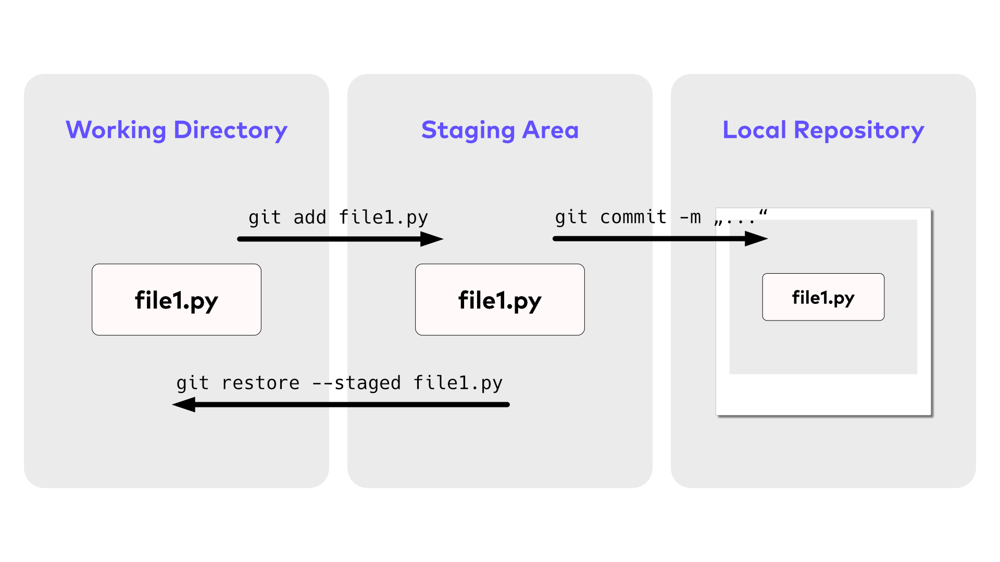

DevOps - Notes
Lecture 01
DevOps Intro
DevOps is a modern approach that integrates software development (Dev) and IT operations (Ops) to improve the efficiency, collaboration, and delivery of software products. It bridges the gap between the development and operations teams by promoting a culture of collaboration and continuous improvement. DevOps aims to automate and streamline the software delivery process, ensuring faster development cycles, better quality, and more reliable releases.
DevOps Lifecycle
Below are the key phases of the DevOps lifecycle:
- Plan: In the planning phase, teams collaborate to define project goals, features, and timelines, often using agile methodologies such as Scrum. Tools like Jira and Trello facilitate task management, aligning team efforts and ensuring transparency across the development process.
- Code: Developers write code using version control systems such as Git to manage changes, ensuring collaboration and proper documentation.
- Build: The code is compiled, and dependencies are managed. Automation tools like Jenkins or Maven ensure that builds happen consistently and efficiently (CI - Continuous integration).
- Test: Automated and manual testing is performed to ensure code quality, functionality, and security. Continuous testing practices help catch regressions and bugs before deployment
- Release: Once the code passes all tests, it is packaged and prepared for deployment. Continuous delivery or continuous deployment (CD) tools like GitHub Actions or CircleCI help automate this step.
- Deploy: The software is deployed to production environments, often using containerization technologies like Docker and orchestration tools like Kubernetes.
- Operate: Monitoring tools like Prometheus or Nagios track the performance and availability of the application, ensuring smooth operations.
- Monitor: Continuous monitoring allows teams to gather feedback, address issues, and optimize performance, feeding back into the next iteration of planning and coding.
These stages form an endless loop of planning, development, and feedback that enables continuous improvement and faster time to market.
Git
A version control system is a system that records the changes made to the code and saves it in a repository. Additionally, it is a collaborative tool that enables multiple individuals to work together on the same code. With the change history we can see who changed what, when and why. There are two types of version control systems:
- Centralized: The code history is stored at a central server every user has access to. Examples are Subversion, Team Foundation Server.
- Distributed: Every user has a local copy of the code history. Examples are Git, Mercurial.
Git Configuration
Before using git, there are a few configurations that have to be made. The settings are saved in .gitconfig files. Configurations can be set on three levels
- System - Settings apply to all user on that system (
.gitconfigin a system folder likeroot/etc) - Global - Settings apply to all repositories of the current user (
.gitconfigfile in the user’s home directory) - Local - Settings only apply to the current repository (
.gitconfigin the project root directory)
# See all configurations
git config --list
git config --list --local
git config --list --global
git config --list --system # if any
# See a specific configuration
git config user.name
# More info
git config --help # extended
git config -h # shortCreate a Git Repository
Create Remote Repository & Clone
- Go to your global repository (in our case GitHub) and create a repository
- Clone
git clone https://github.com/*your-github-name*/*your-repo*.git # using https
git clone git@github.com:*your-github-name*/*your-repo*.git # using sshCreate Locally & Add Remote Repository
# go to the project directory and run
git init
# add a remote (Note: Remote has to be set up beforehand)
git remote add origin https://github.com/OWNER/REPOSITORY.git # using https
git remote add origin git@github.com:OWNER/REPOSITORY.git # using sshCommit Workflow

Add the Changes to the Staging Area
# Add files
git add . # add all changes
# Remove files
git restore --staged *filename* # "remove" file from the staging area
git rm --cached *filename* # use this when you don't have any commits yetCommit
Every commit (snapshot) gets a unique id and contains a complete snapshot of the project. Additionally, it also contains information about who created the commit and when it was created.
git commit -m "Your commit comment"Push to Remote Repository
git pull # pull changes from remote first, then push
git pushBest Pracitices
- Use meaningful messages: This is like a process documentation. Try to omit “Fixed bugs” or “Made changes”
- Commit on a regular basis: Commit when you’ve completed a single logical change, even if it’s small.
- Don’t make your commits too big: Try to break down a big change into small commit packets.
- A commit should represent only one particular change: Don’t group together different “logical” changes.
Helpful commands
git status
git diff . # See difference between working version and staged/committed version
git diff *filename* # Same, but for a specific file
git diff --staged . # See difference between staged and committed version
git log
git log --onelineIgnore Files and Directories
.gitignore
Git offers the option to specify which files and folders should be ignored. This “blacklist,” is saved in a file named .gitignore, located in the root directory of your project.
venv/ # ignore all files and directories inside the venv folder
somedir/file.txt # ignore a specific file
*.txt # ingore all .txt files
!file1.txt # "!" is an exception --> all .txt files are ignored, except file1.txtGit History
Each commit has its own ID (commit-id) and each commit is pointing to the previous commit. All commits created so far belong to the master branch (also called main branch), which is the main line of work. Git uses a pointer for every branch, so MAIN points to the last commit of the current work line. As new commits are created, the MAIN pointer moves forward. When we start using other branches, git will use the HEAD pointer, to keep track of which branch we’re currently working on. Same as the MAIN pointer, the HEAD pointer points to the latest commit. HEAD is a reference/alias to the last commit.
The Log Command
git log shows all commits and changes of the current repository.
git log --oneline # only display comments (can be combined with others)
git log --stat # see all files that have been changed with the commits
git log --patch # see how the code changed (like git diff)View Previous Commits
Use git show to see what changes were made with a specific commit.
# See changes made with a commit
git show d15728b # show commit with id 'd15728b...' (the whole number is not needed, as long as it is unique)
git show HEAD~1 # show 2nd last commitCompare Two Commits
it diff HEAD~2 HEAD # see diff between two snapshots
git diff HEAD~2 HEAD file1.txt # see diff only for file1.txtChecking Out a Commit
Sometimes we want to see the code version as it was at a certain commit. Therefore, we can check out a commit, which will restore the working directory to the snapshot version of this commit. So the working directory will exactly look like in an earlier point in time.
git checkout d15728b # commit id
git checkout HEAD~3
git checkout main # return to the latest commitWhat happens in the background is that the HEAD pointer is now pointing to a previous commit. This brings us in „detached head“ state: The HEAD pointer has been moved to an earlier commit. In this state, no commits should be made, it is only to explore the code.
Programming Styles
Notebook-Style Programming
Data scientists often start with notebook-style programming, particularly in tools like Jupyter Notebooks, for several reasons.
- Interactivity and Exploration: Notebooks allow for an interactive and exploratory coding experience.
- Documentation and Explanation: Notebooks integrate code with documentation in a coherent narrative
- Visualization Capabilities: Data scientists often need to visualize data to understand patterns, trends, and outliers. Notebooks provide seamless integration of code and visualizations.
- Experimentation and Prototyping: Notebooks are well-suited for prototyping and experimenting with different approaches.
There are also downsides data scientists should be aware of.
- Version Control Challenge
- Hidden State and Execution Order
- Lack of Code Modularity
You can also combine notebooks and scripts. Start separating recurring functions in scrips and modules.
Procedural Programming
Procedural programming is a programming paradigm built around the idea that programs are sequences of instructions to be executed. They focus heavily on splitting up programs into procedures, named sets of instructions, analogous to functions. A procedure can store local data that is not accessible from outside the procedure’s scope and can also access and modify global data variables.
Object Oriented Programming (OOP)
Object-oriented programming (OOP) is a method of structuring a program by bundling related properties and behaviors into individual objects. For example, an object could represent a person with properties like a name, age, and address and behaviors such as walking, talking, breathing, and running.
Classes
Classes allow you to create user-defined data structures. Classes define functions called methods, which identify the behaviors and actions that an object created from the class can perform with its data.
A class is a blueprint for how to define something. It doesn’t actually contain any data. While the class is the blueprint, an instance is an object that’s built from a class and contains real data.
4 Main Pillars of OOP
- Encapsulation: Hiding data and behavior within a class, making it inaccessible to other classes or code.
- Abstraction: Simplifying complex systems by breaking them down into smaller, more manageable parts.
- Inheritance: Inherit properties and behaviors from a parent class.
- Polymorphism: Behave differently based on the context in which it is used.
Functional Programming (FP)
At its core, Functional Programming (FP) is a programming paradigm that treats computation as the evaluation of mathematical functions and avoids changing-state and mutable data.
Core Concepts of Functional Programming
- Pure Functions: Pure functions are functions that have no side effects.
- Immutable Data: Do not modify data in-place.
- Lazy Evaluation: Only evaluate as expression when we need to operate on it.